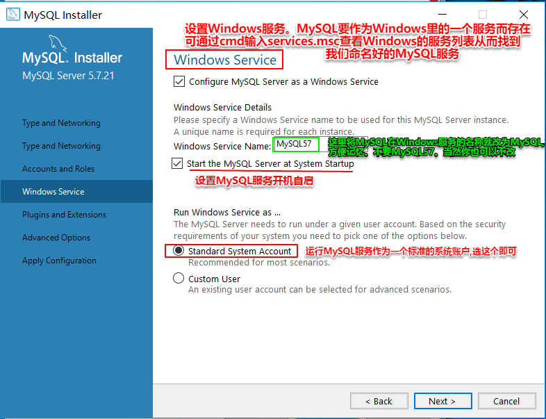

1.数据和数据库
1.数据库(Database db):按照数据结构存储数据的仓库。
2.数据分类:
结构化数据: 通过简单二元模型(关系模式:表格形式)存储的数据
非结构化数据: 无法通过统一格式表示
半结构化数据: 处于两者之间
3.数据库管理系统(DBMS):操作和管理数据库的软件。
4.数据库管理系统分类:
1.关系型数据库管理系统(RDBMS):
oracle: oracle公司大型分布式关系型数据库管理系统(产品免费,服务收费)
金融 -- 传统厂商
mysql: oracle公司,中小型关系型数据库管理系统,开源免费
mariaDB：和mysql基本一致
sql server: microsoft公司,中型dbms。界面好用 但是只能在Windows上使用 不能在其他操作系统中使用
db2: IBM公司,中小型dbms
2.非关系型数据库管理系统(Nosql: not only sql): 主要是用来弥补关系型数据库的,而不是代替
redis / hbase / mongodb / neo4j
2.mysql
mysql是由mysql ab公司开发的开源的关系型数据库管理系统,通过分库分表形式灵活存储。
支持千万级别
采用GPL(开源)许可证。
1996年正式发布第一版
2000年开源
2008年被sun以10亿美元收购
2009年sun被oracle以74亿美元收购
1.下载和安装:
安装的路径:
mysql server:
安装路径 C:\Program Files\MySQL\MySQL Server 5.7
数据(文件): C:\ProgramData\MySQL\MySQL Server 5.7
mysql connector/j: C:\Program Files (x86)\MySQL\Connector J 5.1
安装步骤:
1、由于是在Windows安装 可直接下载可视化的MySQL安装软件

这里点击选以前的版本：

这里选择跳转到可视化的安装包：


2、安装MySQL具体步骤:
注意安装类型
这里我们可以选择Custom(自定义)安装


可点击Advanced Options来选择两个组件的安装路径,注意路径不要有中文以及其他非法字符，但一般不改


注意下图这如果出现界面提示Path conflict(路径冲突), 如果之前装过MySQL一定要最好确保已经把上述路径删
干净了。当然, 如果你选择其他自己创建的文件夹也可以, 如果出现文件夹已经存在 ,是没有关系的。当然最好
让程序自己创建文件夹, 而不是你预先创建好。

如果接下来出现以下界面, 则需要点击 execute, 会自动下载好vc++ 2013,然后手动安装好即可。

安装过程中如果以上两张图的界面都没有出现,则是直接出现以下界面, 就可以正常安装了。


经过以上步骤,安装已经完成, 接下来的步骤是对MySQL进行一些相应的配置。


接下来会出现如下界面

上面这个界面要注意以下这几个点


下面是关于计算机网络的小知识:


当然，有root用户就够了，不用创建其他用户，上图只是说明一下创建的方法。

接下来是插件和扩展的选择,暂时可以不动,直接点next。

接下来是高级选项。因为前面勾了这个选项,所以会有

配置完毕,最后一步,点execute即可

执行结果如下,点finish即可

可以看到配置完成,再点next即可

最后显示结果,点finish即完成了所有过程

因为MySQL的安装只是一个服务。服务是没有界面的。只能在Windows的服务里面看到多了一个MySQL

安装好之后的三个文件夹分别有


3、安装完成后最好配置一下环境变量,以便于cmd在任何目录下都可以调用使用mysql的相关命令
win10打开环境变量配置界面的步骤:
选中桌面"此电脑"图标>>右键,点击"属性">>高级系统设置>>环境变量
接下来的操作步骤:
>>选择"系统变量(s)"中的Path变量,点击"编辑">>进入界面后点击"新建">>
将"C:\Program Files\MySQL\MySQL Server 5.7\bin"粘贴到新建的那一行,点击"确定"即可。配置完成。
以下是一些重要步骤的图:


若安装出错:
1.安装目录有中文或者非法字符
2.之前安装的(残留)
卸载之前安装的MySQL的方法最好先采用官方的,也就是再点击一次安装程序,界面会变成如下

其他卸载MySQL的方法参考这两篇博客: https://blog.csdn.net/weixin_42369926/article/details/81042133
如果没有出现重新安装不上的情况,第一篇博客的"补充"部分不用管,
第二篇博客的第5点的第一小步可以不执行,按照第一篇博客的方法即可
2.MySQL的目录和文件
- C:\Program Files\MySQL\MySQL Server 5.7\bin : 存放二进制可执行文件(连接数据库,修改密码等...),可直接双击执行
或者通过命令行调用执行。
当然要用命令行调用执行这些可执行文件的话要么事先在环境变量配置好这个路径,要么就要cd到
这个目录下才能直接执行。

- C:\ProgramData\MySQL\MySQL Server 5.7: 默认data存放目录

Data目录: 数据存放目录。 Data目录下每个子目录代表一个数据库,数据库目录下的一个.frm文件就代表一张表的
结构性信息, 一个.ibd文件主要放的是一张表数据的索引信息。
my.ini文件: mysql配置文件, mysql数据库管理系统(软件)启动会加载该文件。
可以直接在该文件修改MySQL的配置, 可以修改我们刚刚在可视化界面设定的大部分配置
3. C:\Program Files (x86)\MySQL\Connector J 5.1: java连接工具

3.客户端连接(启动服务)
(1)命令行: linux/windows(终端:shell命令)
登录:mysql -uroot -proot 。也可以mysql -uroot -p 就会再要求你输入密码了,这个时候输密码就不是明文密码了,这样更隐秘一些
显示所有数据库: show databases;
选择数据库: use 数据库名;
显示所有表(当前正在使用的数据库中的): show tables;
修改密码: mysqladmin -uroot -p password 新密码 (前提是已经登录进入MySQL,也就是说要知道旧密码)
退出: exit
(2)图形化界面: navicat 、 workbench、sqlyog等
(3)java: jdbc
Navicat的安装与破解
Navicat就是一个连接MySQL的可视化客户端而已。
选择64位版即可,安装非常简单。

选择安装目录:

然后一直点击下一步即可完成安装。
安装完后不要着急打开软件,先破解一下。
先解压PatchNavicat12

解压完之后的程序要注意不要被杀毒软件隔离了。

双击破解软件后,要求你找到一个叫navicat.exe的文件。这个文件就在刚刚安装Navicat时选择的安装路径下。
点击找到的文件,选择"打开"。(这个操作需要重复三次)

重复三次打开该文件后,出现如下界面, 说明破解成功。

此时再打开Navicat就是已经破解好的软件了。
安装好之后,需要连接MySQL。因为Navicat只是一个客户端,需要连接MySQL的服务端。


新建连接时,连接本机的MySQL的IP地址,只能用本机回环地址而不能用网关分配的地址,原因如下:

而我的hadoop集群的虚拟机的mysql可以直接用Windows中的Navicat连接正是因为虚拟机中的mysql在安装完之后立马就设置好了允许远程连接的权限
5. MySQL如何允许远程连接(首先要先看看防火墙的3306端口是否,开启)
方法1.在连接了mysql 服务器后, 找到mysql库，并找到该库里的user表中,表中的Host字段默认值都为localhost,,也就是哪些主机可以使用该User, 将Host字段的值修改为%后, 就是所有主机都可以访问该User了不改的话当前主机的mysql只能连接localhost的用户,不支持远程连接

修改方法: (下面是修改了root用户的权限,如果想好要修改, 要小心安全问题)。
update user set Host = '%' where User = 'root'; #("%"表示通配符,意思就是所有皆可,就像它在查询里的意思一样)
flush privileges; #上面是修改了权限,修改了权限光修改时不够的,需要立即刷新一下权限
这时候再直接新建一个连接,如下图,192.168.5.226是路由器分配的IP地址,即ipconfig出来的路由地址,这时候也能直接连接上本机Windows系统里的MySQL服务器了（这种用路由器（或者说网关）分配的ip地址连接mysql的方式也是远程连接）

方法2. 专门给某个mysql的用户设置为可以远程访问的用户,并给其设置远程访问时登录的密码(该密码不一定要是本地登录的密码)
grant all privileges on *.* to 'root'@'%' identified by 'root'
with grant option;
flush privileges;
意义如下:
授权之后user表变为如下,新增的一行为远程登录的账号:

如果赋予了某虚拟机远程登陆权限，则可以直接在Windows上用主机名或网关分配的ip地址就能连接该虚拟机的mysql，如果没有设置远程登录权限，则在Windows上连接不了该虚拟机的mysql，该虚拟机里的mysql只能被该虚拟机自己的某软件通过网卡上的本机回环地址连接。Windows系统上的mysql也是一样的，如果没有远程登录权限，则不能被其他主机访问，也不能在自己主机上直接用网关分配的ip地址登录，因为网关分配的ip是由路由器给的，连接mysql的软件访问网卡，网卡还要访问路由器，这种间接得到ip地址的方式也是远程登录
下图是未设置远程登录权限的Windows中的mysql中的mysql库的user表（此时是不能用网关分配的ip地址连接该数据库的，只能用localhost或127.0.0.1连接该数据库）：

下图是已经用方法2赋予了远程登录权限的虚拟机中的mysql中的mysql库的user表（我的hadoop集群中，不管是哪台虚拟机，表都是如下图所示，其中赋予远程访问权限的方式与方法二的语句一模一样）：

观察上面两图，可以发现虚拟机中已经有很多方式可以连接该虚拟机的mysql，即支持远程连接；而Windows中则只能用localhost或127.0.0.1连接mysql，即还不支持远程连接。